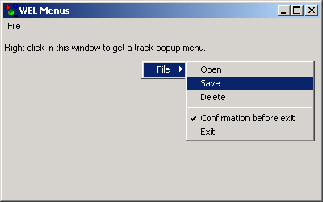

Menus Sample

Compiling
To compile the example:
- Launch [BENCH].
- Select Use existing Ace (control file) and click OK.
- Browse to Eiffel50\examples\wel\menus\.
- Choose Ace.ace
- Choose the directory where the project will be compiled, by default the same directory containing the Ace file.
- Click OK.
Running
After launching the program, you will see a window displayed with a similar appearance to the one displayed above. If you right click in the client
area of the window, a menu will pop up at the cursor position. The same menu is also accessible from the "File" menu. Selecting any of the menu options will
display a notification of which option was selected.
Under the Hood
A WEL_MENU is used for the menu's in this sample. The feature show_track is used to display the
menu at the cursor position and a WEL_MSG_BOX is used to display the notification when a menu selection has occured.
This sample contains the following classes: